Concept preview
★ 4.6 · 341 Google reviews
Good food & drink on Broad Street.
A real neighborhood bar with a kitchen that surprises people. Burgers, ribs, wings, weekend brunch, heavy pours, and sample event nights shown below.
Open late
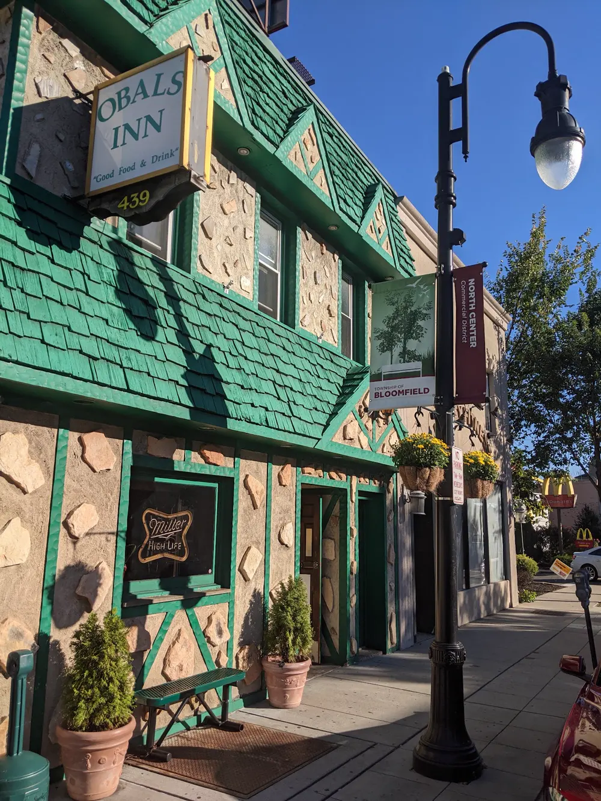
What’s cooking
The kitchen is the secret.
A no-frills corner bar with a real kitchen: burgers, ribs, wings and a specials board.
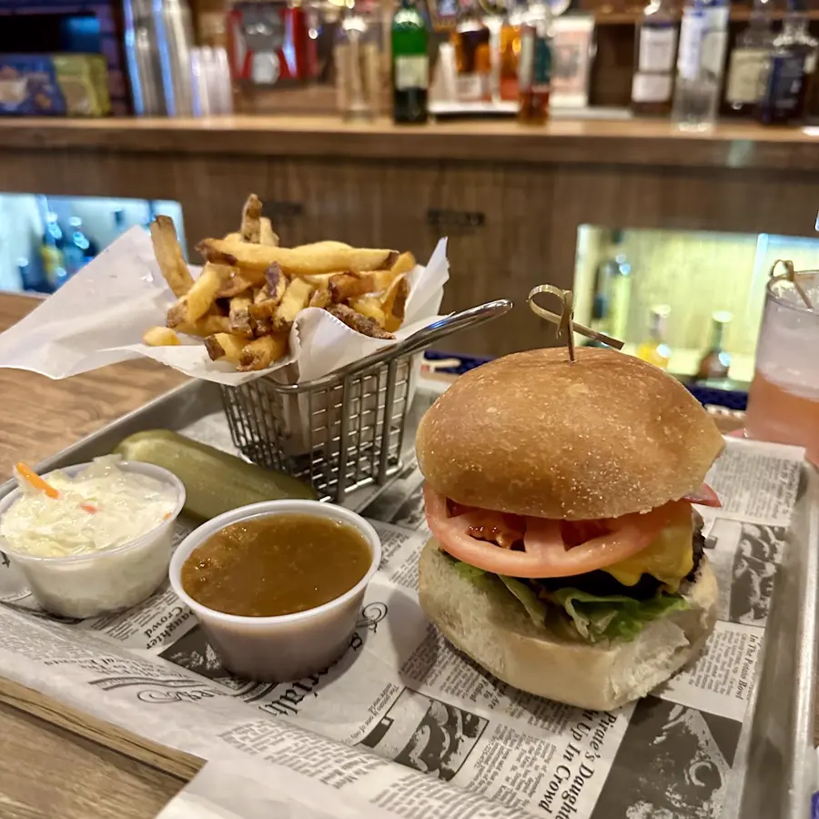
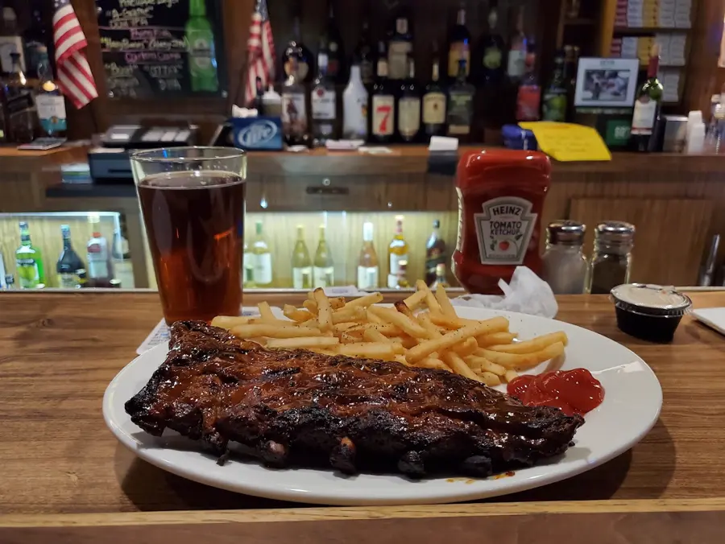
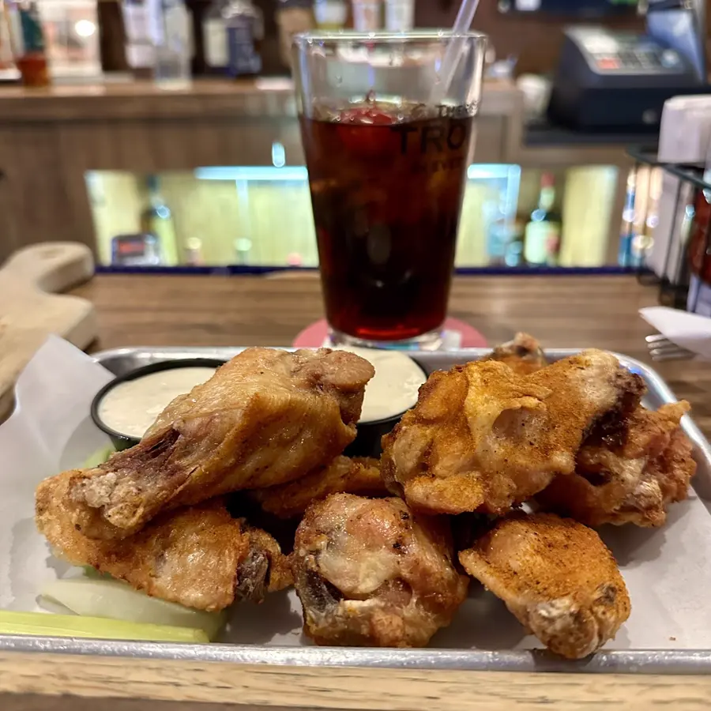
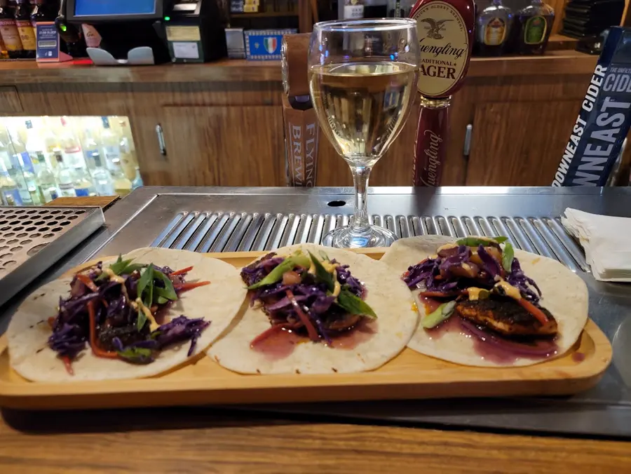
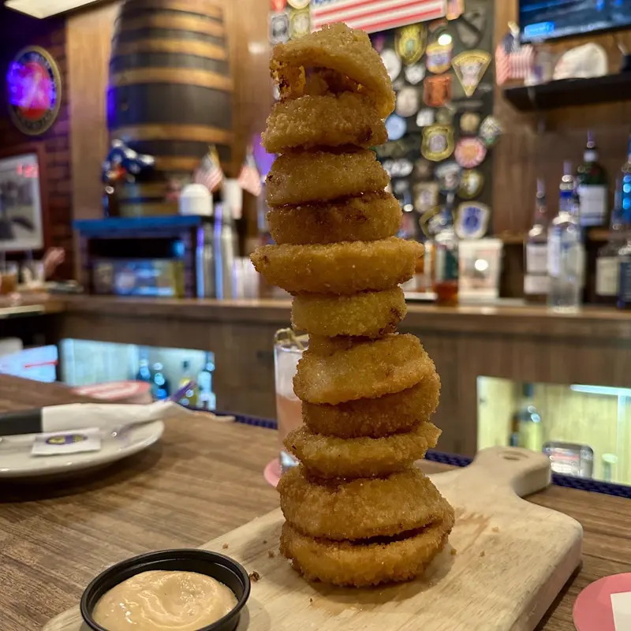
“The food is shockingly good for what is otherwise a decent, small local bar.”
Josh C. · Google review
Call ahead for today’s specials and kitchen hours.
Behind the bar
Heavy pours. Friendly faces.
A wide draft list from clean taps, a cocktail menu, and bartenders who know their stuff.
- A wide draft list on clean taps
- Craft cocktails and old-school highballs
- Fair prices, all night
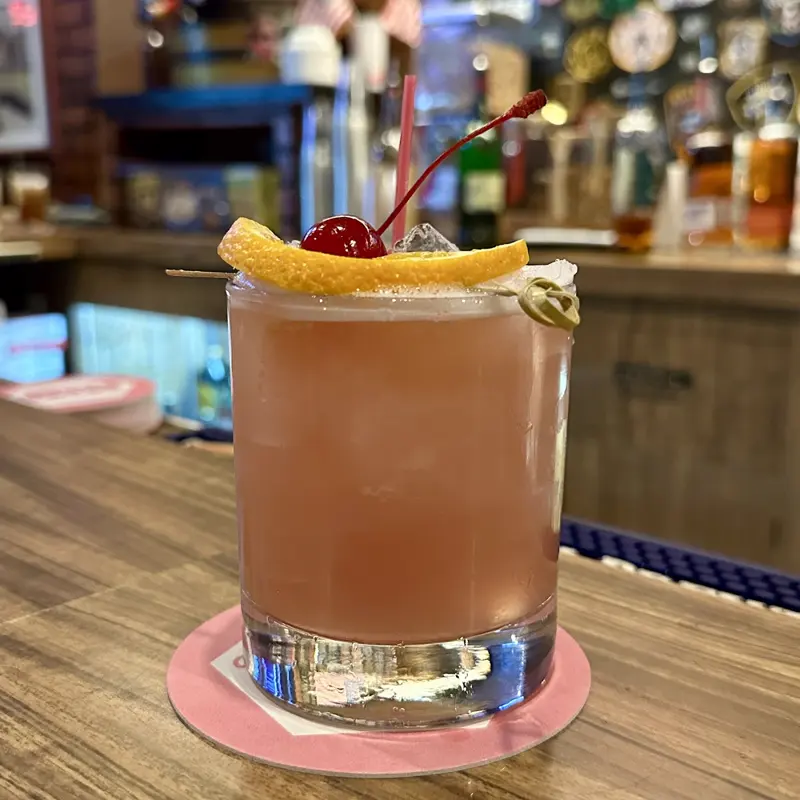
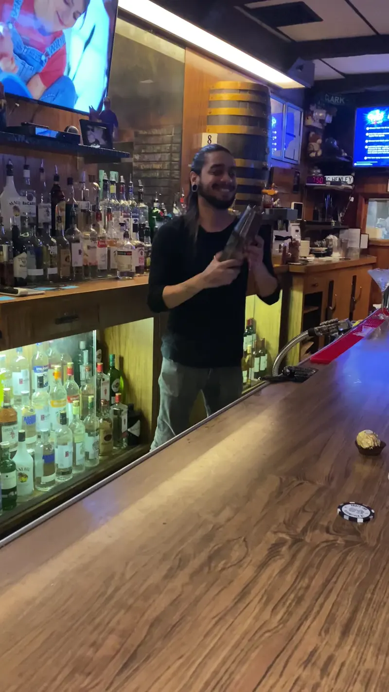
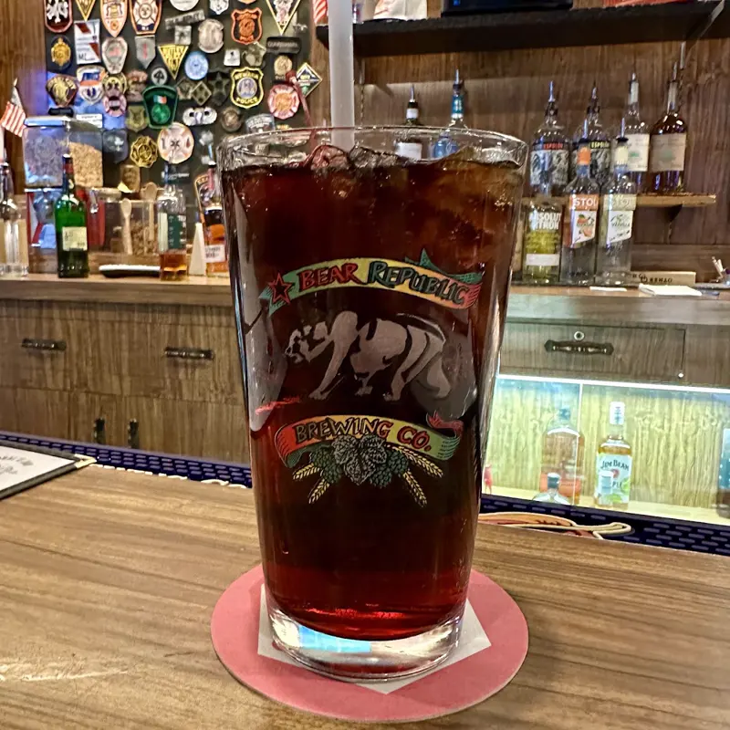
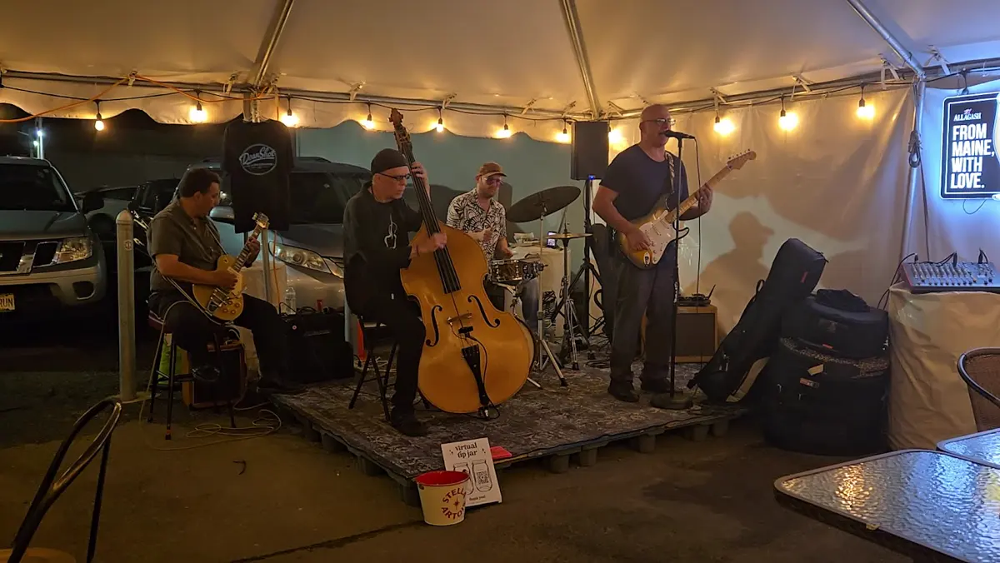
What’s on
Sample lineup.
Sample lineup. These nights are examples for this preview, not Obal’s real schedule.
Sample lineup. Call for the real schedule.
What people say
4.6 stars from 341 locals.
“Best bar in Bloomfield. Good food and good service, with a decent variety of drafts from clean taps.”
“This place is a classic. Amazing ribs, great food and a wonderful beer selection.”
“Best hole in the wall pub! Heavy pours and good food at great prices.”
“Great Food, Friendly Bartenders & clientele, and plenty of TVs to watch ALL the games.”
“An all time favorite of my friends and I. Great brunch options.”
“Obal’s is an institution in town. I went there on Easter and got a burger. It was GREAT!”
Google reviews, shortened. Read all 341 on Google ↗
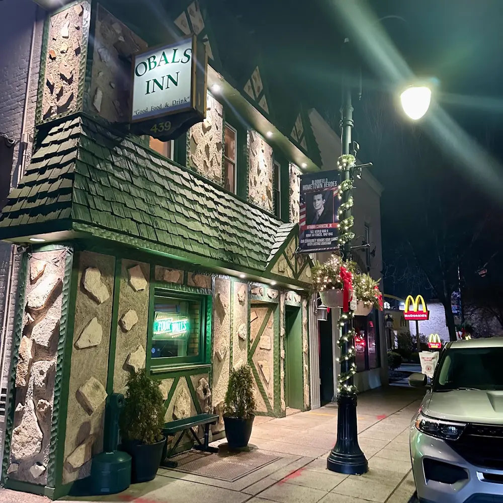
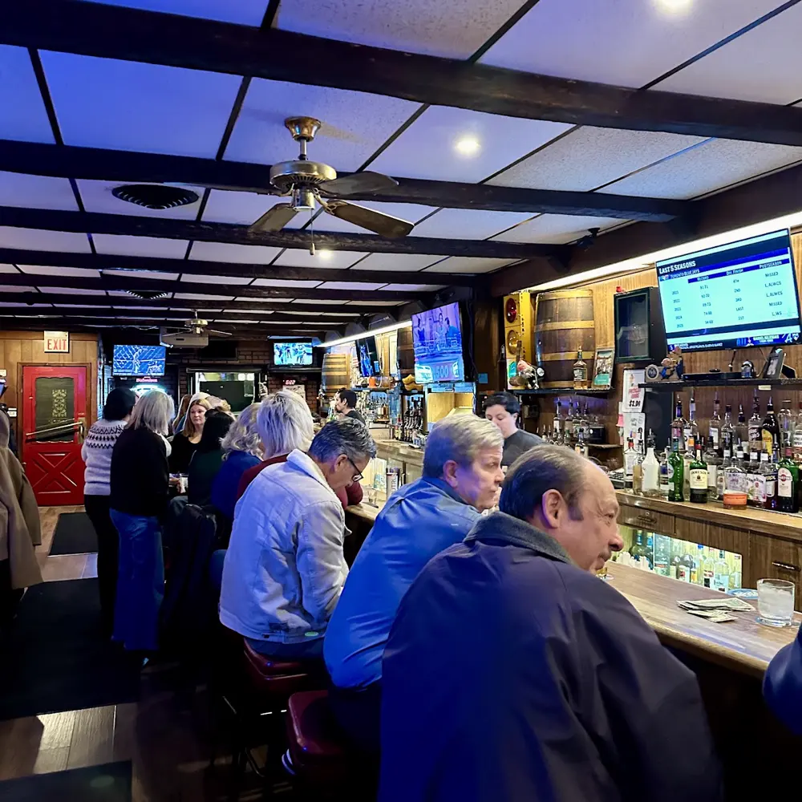
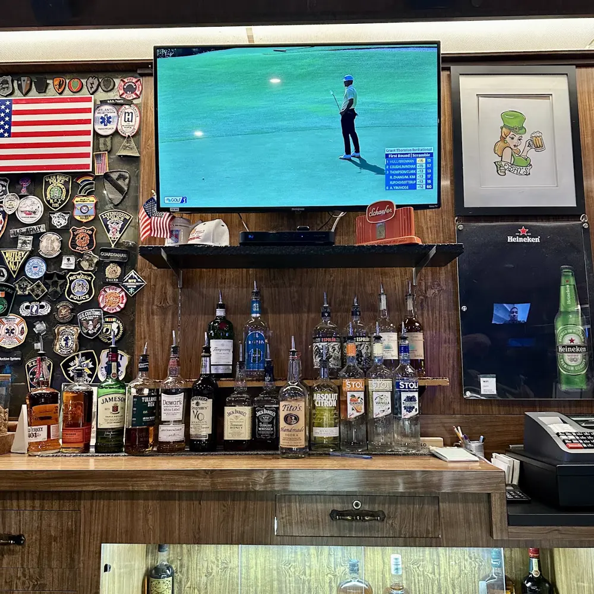
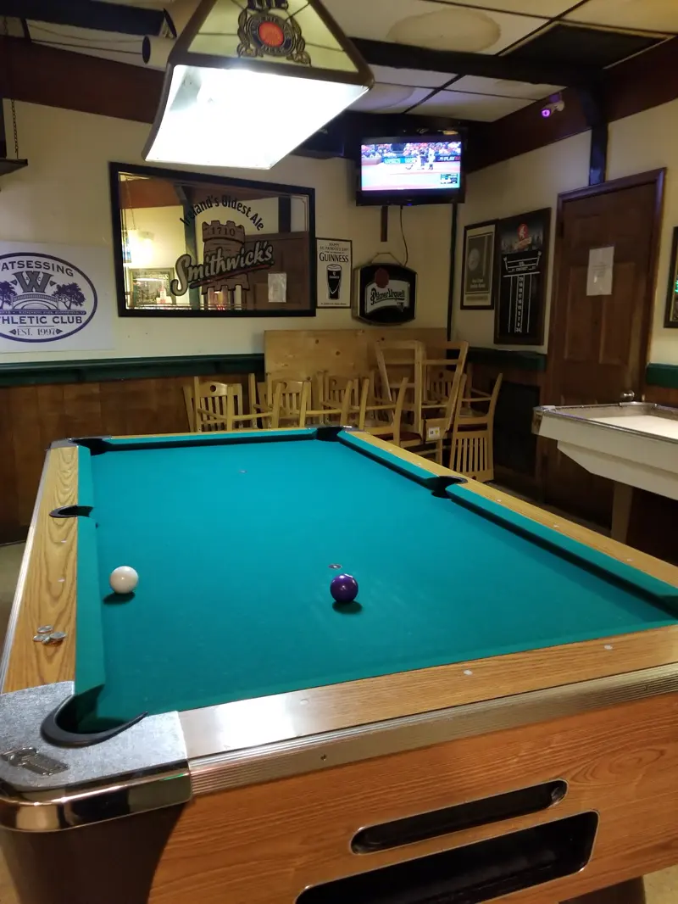
Big groups
Bringing the whole crew?
Birthdays, game nights, after-work drinks. Send a request and Obal’s will call you back to set it up.
Find us
Come hungry. Stay late.
439 Broad StBloomfield, NJ 07003
Wheelchair-accessible entrance, parking lot and restroom.
Hours
- Monday
- 5 pm – 2 am
- Tuesday
- 11 am – 2 am
- Wednesday
- 11 am – 2 am
- Thursday
- 11 am – 2 am
- Friday
- 11 am – 2 am
- Saturday
- 11 am – 2 am
- Sunday
- 11 am – 2 am
Kitchen hours vary. Call to check before you come for food.